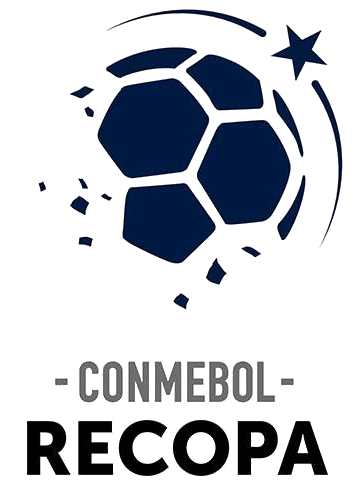

Clube de Regatas do Flamengo
Clube de Regatas do Flamengo (mais conhecido simplesmente como Flamengo, popularmente pelos apelidos de Fla, Mengo e Mengão, e cujo acrônimo é CRF) é uma agremiação poliesportiva brasileira com sede na cidade do Rio de Janeiro, capital do estado homônimo. Fundado no bairro do Flamengo para disputas do esporte remo em 17 de novembro de 1895, tornou-se um dos clubes mais bem-sucedidos e populares do esporte brasileiro especialmente pelo futebol. É considerado um dos maiores e mais tradicionais clubes do Brasil e da América do Sul. Tem como suas cores tradicionais o vermelho e o preto e como seus maiores rivais esportivos o Vasco da Gama, o Fluminense e o Botafogo.
O Flamengo é o clube de futebol mais popular do Brasil, com uma torcida estimada em 40,4 milhões de torcedores espalhados por todas as regiões do Brasil. Segundo levantamento conduzido pela agência de marketing desportivo Gerardo Molina-Euroamerica, o Flamengo é, em números absolutos, o clube de futebol com o maior número de seguidores em todo o mundo. Em razão da força de sua torcida, é o clube brasileiro que mais recebe valores de direitos de transmissão. Desde 2018, o Flamengo é considerado o clube mais valioso do Brasil, tornando-se em 2019, o time mais valioso da América do Sul, além de ser o 70º time de futebol mais valioso do mundo, avaliado em mais de 145,7 milhões de euros. Um Fla-Flu detém o recorde mundial de público de partidas entre clubes: 194 603 espectadores, na final do Campeonato Carioca de 1963, vencido pelo Flamengo após um empate sem gols.
Além do prestígio com o futebol, o Flamengo também se destaca em outras modalidades esportivas coletivas e individuais, notadamente no remo, no polo aquático e no basquetebol. Neste último, é um dos clubes mais tradicionais do país, tendo a sua equipe de basquetebol masculino conquistado quarenta e sete títulos estaduais, oito títulos Brasileiros, um Campeonato Sul-Americano de Clubes Campeões, uma Liga Sul-Americana, uma Liga das Américas, uma Champions League Américas e duas Copas Intercontinentais FIBA.
História
Século XIX
Em fins do século XIX o remo dominava o Rio de Janeiro. O futebol começava apenas a aparecer em alguns clubes, mas ainda era olhado com certo temor, pois não estava sendo recebido com entusiasmo pela sociedade carioca. A criação de um grupo organizado com o objetivo de disputar competições de remo com clubes de outros bairros surgiu entre jovens do bairro do Flamengo, no Café Lamas, no Largo do Machado.
Um novo barco foi comprado e recebeu o nome de "Scyra". Na noite de 17 de novembro de 1895, muita gente estava em um dos corredores da casa número 22 da Praia do Flamengo, onde Nestor de Barros morava num dos quartos. Lá, há muito tempo, já haviam abrigado "Pherusa", e agora guardavam "Scyra". A reunião teve por objetivo a fundação do Grupo de Regatas do Flamengo. Além dos eleitos, foram destacados como sócios-fundadores, José Agostinho Pereira da Cunha, Napoleão Coelho de Oliveira, Mário Espínola, José Maria Leitão da Cunha, Carlos Sardinha, Maurício Rodrigues Pereira, Desidério Guimarães, Eduardo Sardinha, Emido José Barbosa, José Félix Cunha Meneses, George Leuzinger, Augusto Lopes da Silveira, João de Almeida Lustosa e José Augusto Chairéo, sendo que os três últimos faltaram à reunião, mas foram considerados sócios-fundadores. Na oportunidade ficou estabelecido que a data oficial da fundação do clube seria 15 de novembro, feriado nacional.
As cores iniciais foram azul e ouro em listras horizontais bem largas, entretanto, em 1898, por proposta de Nestor de Barros, houve mudança para as atuais: vermelho e preto. Novos barcos foram sendo comprados e o Mengo começou a destacar-se nas competições. Na I Regata do Campeonato Náutico do Brasil, no dia 5 de junho de 1898, conquistou a sua primeira vitória, com "Irerê", uma baleeira a dois remos. Anteriormente o Flamengo só havia obtido colocações secundárias e muitos segundos lugares, o que lhe valeu, inclusive, o apelido de "Clube de Bronze". Em 1902, diante de seu crescimento, houve a transformação para Clube de Regatas do Flamengo.
Século XX
Em 1927, um concurso promovido pela água mineral Salutaris e pelo Jornal do Brasil objetivou eleger o "clube mais querido do Brasil". O torcedor deveria escrever o nome do seu time favorito no rótulo da garrafa d'água, ou no cupom impresso no jornal, e envia-lo preenchido para a sede do Jornal do Brasil, no Rio de Janeiro. O vencedor levaria para sua sede a portentosa Taça Salutaris e o "título" de clube mais querido do Brasil. Ao final da apuração, o Flamengo somou 254 850 votos e venceu a disputa. Atualmente, a Taça Salutaris é exibida em local de destaque na sala de troféus do Clube de Regatas do Flamengo, ladeada pela Copa Libertadores da América e pela Taça Intercontinental de 1981.
Outro fator que ajudou a popularizar a força do Flamengo pelo país foi a Segunda Guerra Mundial. Com o posicionamento do Brasil como aliado dos Estados Unidos, foram construídas nas cidades de Natal-RN e Belém-PA, pelos americanos, duas antenas de alta captação para pegar sinais enviados dos navios inimigos. Só que as mesmas antenas também permitiram a transmissão de jogos, via rádio, para o Norte e o Nordeste do país. Na época, com o Rio de Janeiro como a capital do país, a importância do que acontecia em terras cariocas era muito alta. Além disso, o rádio era o meio de comunicação mais utilizado para notícias e, claro, transmissão de esportes. Dessa forma, as vitoriosas campanhas rubro-negras nos estaduais do começo da década de 40 se alastrou, ajudando a popularizar o clube.
Símbolos
Escudo
O escudo do Flamengo mudou um pouco ao longo da história do clube. A maioria das mudanças foram alterações no monograma de letras entrelaçadas, com o mais recente redesenho sendo revelado em 2018.
O clube usa três escudos em diferentes situações: o escudo completo é usado como logotipo oficial do clube, o escudo de remo é usado para todos os uniformes e equipamentos relacionados ao remo e o monograma "CRF" branco é normalmente o único componente do escudo usado em o uniforme de futebol principal. A partir de 1980, o Flamengo usava três estrelas brancas alinhadas verticalmente ao longo do lado de sua crista monograma para indicar seus três tricampeonatos da liga estadual (1942-43-44, 1953-54-55 e 1978-79-79 Especial). Quando a Nike se tornou fornecedora de uniformes do Flamengo em 2000, seu primeiro uniforme apresentava o escudo completo com três estrelas acima pela primeira vez. Após o tetracampeonato estadual (1999-2000-2001) e para comemorar os 20 anos da Copa Libertadores e da Copa Intercontinental de 1981, uma quarta estrela branca e uma estrela dourada foram introduzidas acima do escudo. Desde 2005, o clube usa apenas a estrela dourada acima do escudo do monograma "CRF" em suas camisas.
Uniformes
Na reunião de 1895 que instituiu o clube de remo do Flamengo, as cores oficiais do clube foram definidas como azul e dourado para simbolizar o céu do Rio de Janeiro e as riquezas do Brasil. A equipe adotou um uniforme de grossas listras horizontais azuis e douradas. No entanto, o Flamengo não conseguiu vencer uma única regata em seu primeiro ano e ganhou o apelido de "clube do bronze". As cores do time eram percebidas como má sorte, e o tecido colorido era caro para importar da Inglaterra. Um ano após a criação do clube, as cores oficiais foram substituídas pelas atuais vermelho e preto.
Em 1912, a pedido da equipe de remo do Flamengo (que se opôs ao uso do mesmo uniforme pelo recém-criado time de futebol), os jogadores de futebol vestiram camisas divididas em quarteirões vermelho e preto que ficou conhecido como uniforme Papagaio de Vintém, nomeado após um estilo particular de pipa. No entanto, a camisa tornou-se sinônimo de azar e foi substituída em 1913 por uma camisa com listras horizontais vermelhas e pretas e faixas brancas mais finas. Este uniforme foi apelidado de cobra coral devido à sua semelhança com o padrão de uma cobra-coral. Este foi o uniforme usado quando o Flamengo conquistou seu primeiro Campeonato Carioca em 1914. As faixas brancas foram retiradas da camisa em 1916, pois o padrão era muito parecido com a bandeira da Alemanha da época, contra quem o Brasil era aliado na Primeira Guerra Mundial. A equipe de remo permitiu que o time de futebol usasse o mesmo uniforme, e assim nasceu o tradicional uniforme de futebol do Flamengo de camisa listrada vermelha e preta, calção branco e meias rubro-negras.
Em 1938, o técnico do Flamengo, Dori Kruschner, sugeriu a criação de um uniforme branco secundário para "melhorar a visibilidade nas partidas noturnas". O novo uniforme foi aprovado pelo clube, e o Flamengo se tornou pioneiro dos uniformes secundários no Brasil. A camisa branca tinha duas listras vermelhas e pretas no peito até 1979, quando foi alterada para um peito branco liso com listras nas mangas. Esta foi a camisa usada pela equipe que conquistou a Copa Intercontinental de 1981.
A partir da década de 1990, o clube começou a experimentar seus segundo e terceiro uniformes alternativos, às vezes vestindo camisas pretas ou vermelhas. Em 1995, por ocasião do centenário do clube, uma camisa "Papagaio de Vintém" foi usada em amistosos. Em 2010, a fornecedora de uniformes Olympikus introduziu um uniforme alternativo azul e dourado que homenageava as cores originais do Flamengo e o uniforme da regata, porém não foi bem recebido pelos torcedores que o compararam ao uniforme usado pelo time satírico fictício "Tabajara" no popular programa de comédia Casseta & Planeta, Urgente!. Na primeira metade da temporada de 2009, a equipe vestiu um uniforme sem patrocínio pela primeira vez em 25 anos. O Flamengo continuou a usar tradicionalmente camisas listradas vermelhas e pretas com shorts brancos como seu uniforme principal.
Mascote
O primeiro mascote do Flamengo foi o marinheiro Popeye, personagem de quadrinhos na década de 1940 (e, posteriormente, de desenhos animados). A ideia para o mascote partiu do chargista argentino Lorenzo Molas, que viu, no Popeye, a força e a persistência do Flamengo, além de sua óbvia ligação com o mar. No entanto, tal mascote nunca foi muito popular entre a torcida do clube.
Na década de 1960, as torcidas rivais começam a chamar os torcedores do Flamengo de "urubus", alusão racista à grande massa de torcedores rubro-negros afrodescendentes e pobres. Tal apelido de cunho ofensivo nunca foi bem recebido pela torcida do Flamengo, até o dia 31 de maio de 1969. Foi em um domingo, quando um torcedor rubro-negro resolveu levar a ave para um jogo entre o Flamengo e Botafogo no Maracanã. Na época, os dois clubes faziam o clássico de maior rivalidade pós-Garrincha. E o Flamengo não vencia o rival fazia quatro anos. Nas arquibancadas, os torcedores do Botafogo gritavam, como sempre, que o Flamengo era time de "urubu".
O urubu foi solto na arquibancada com uma bandeira presa nos pés e, quando caiu no gramado, pouco antes de o jogo iniciar, a torcida fez a festa, vibrando e gritando: "é urubu, é urubu". O Flamengo venceu o jogo por 2–1 e, a partir daí, o novo mascote consagrou-se, tomando o lugar do Popeye. O cartunista Henfil, rubro-negro, tratou de humanizá-lo em suas charges esportivas em jornais e revistas, e o Urubu tornou-se um mascote popular.
Títulos
| ícone | Competição | Títulos | Temporadas |
|---|---|---|---|
| Mundiais | |||
| Intercontinental | 1 | 1981 | |
| Continentais | |||
| Copa Libertadores da América | 3 | 1981, 2019 e 2022 | |
| Copa Mercosul | 1 | 1999 | |
|  | Recopa Sul-Americana | 1 | 2020 |
| Nacionais | |||
| Campeonato Brasileiro | 8 | 1980, 1982, 1983, 1987, 1992, 2009, 2019 e 2020 | |
| Copa do Brasil | 5 | 1990, 2006, 2013, 2022 e 2024 | |
| Supercopa do Brasil | 3 | 2020, 2021 e 2025 | |
| Estaduais | |||
| Campeonato Carioca | 39 | 1914, 1915, 1920, 1921, 1925, 1927, 1939, 1942, 1943, 1944, 1953, 1954, 1955, 1963, 1965, 1972, 1974, 1978, 1979, 1979, 1981, 1986, 1991, 1996, 1999, 2000, 2001, 2004, 2007, 2008, 2009, 2011, 2014, 2017, 2019, 2020, 2021, 2024 e 2025 | |